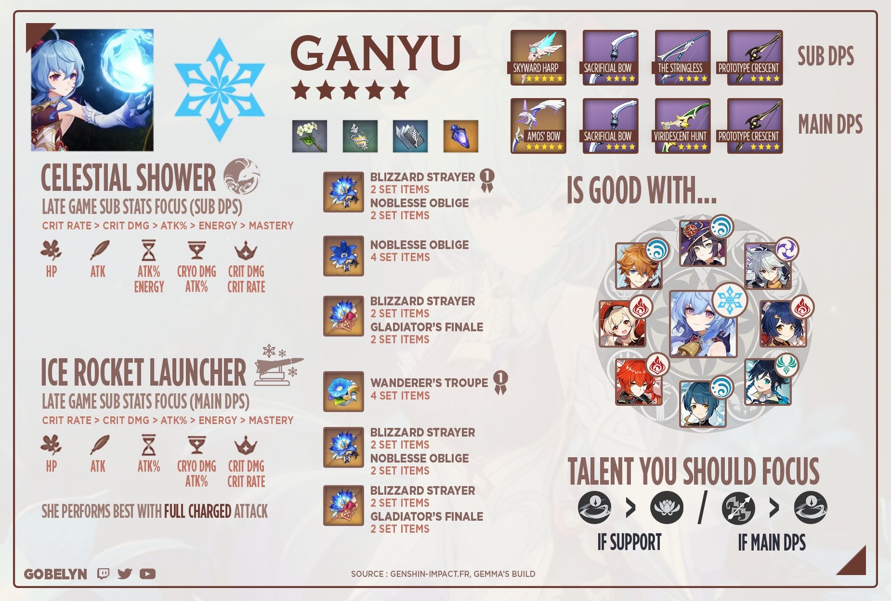

Ganyu
Dlaczego Ganyu?
- Świetny cryo dps
- Taki sam case jak u Ayaki przy 4pcs BS nie potrzeba więcej niż 30 cr
- Możemy strzalać do przeciwników z odległości zadając tym samym duży dmg (jej głównym żródłem obrażeń
jest charged atk) dlatego też nie wymaga tarczy
do góry
Guide z buildami do Ganyu

do góry
Zestaw umiejętności
do góry